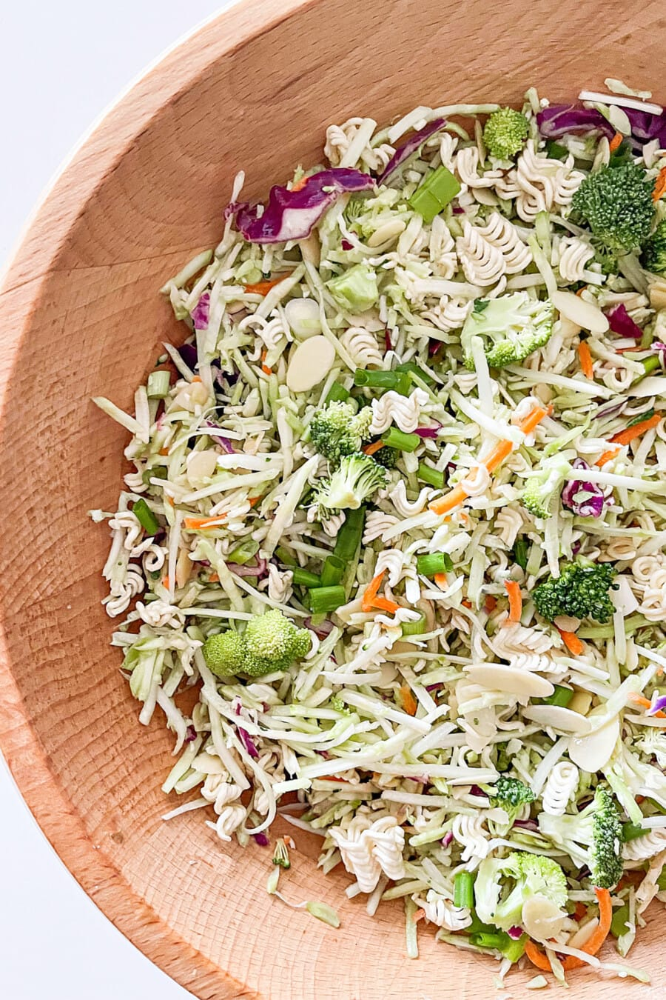

Homepage
Ramen

Description:
This Asian-inspired salad is appreciated by everyone because of its unique blend of textures and flavors.
Ingredients:
- 2 (3 ounce) packages ramen noodles, crushed
- 1 cup blanched slivered almonds
- 2 teaspoons sesame seeds
- ½ cup butter, melted
- ¾ cup vegetable oil
- ½ cup white sugar
- ¼ cup distilled white vinegar
- 2 tablespoons soy sauce
- 1 head napa cabbage, shredded
- 1 bunch green onions, chopped
Steps
- Brown ramen noodles, almonds, and sesame seeds with melted butter in a medium skillet over low heat. Once browned, take off heat and cool.
- Bring oil, sugar, and vinegar to a boil in a small saucepan for 1 minute. Cool. Add soy sauce.
- Combine cabbage and green onions in a large bowl. Add noodle mixture and soy sauce mixture. Toss to coat and serve.